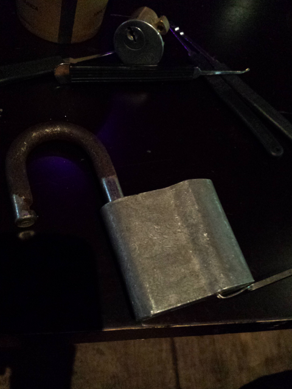

I was lucky enough to be able to go across to Melbourne for Ruxcon in 2015 and it was an absolute blast. I'd recommend it to any budding security professional that wants to meet people in the industry and see some great talks. There is a good mix of activities and talks, I think you could spend your whole time at Ruxcon just doing one or the other.
There was a hardware hacking village where people were breaking out the soldering irons and working on circuit boards, I didn't really get a chance to visit that but it sounded pretty ammazing.
They also had ruxlocks where people where learning how to pick locks and handcuffs. I was really exited to try it out and they had a practice lock. It was a padlock where the base was made of clear plastic so you could see the pins as you moved them with the lock pick. I managed to unlock that fairly quickly (about 3 or 4 minutes which is not too bad for a first try). Then I moved on to a real padlock and after a while I managed to open that as well.

Then I had a go with the handcuffs, that went pretty well. I started with just one cuff on and the other hand free and got out of it surprisingly easily. So then I tried to do it with both wrists and just after I'd locked my self up, the pizza arrived. Not wanting to miss out I ate pizza with handcuffs on then got back to picking my way to freedom.

I also spent a bit of time the capture the flag competition where I feel that I did reasonably well. I got all the easy flags at any rate.
And while all that was going on there were also two streams of talks running as well. I tried to see as many talks as I could but didn't see as many as I'd have liked. One of the stand out talks for me was Vanessa Teague's talk on the iVote system. It was a both fascinating and horrifying view into how the New South Wales online voting system was designed.
If you have never been to Ruxcon before but are interested in security I would recommend checking it out, it's well worth the money.